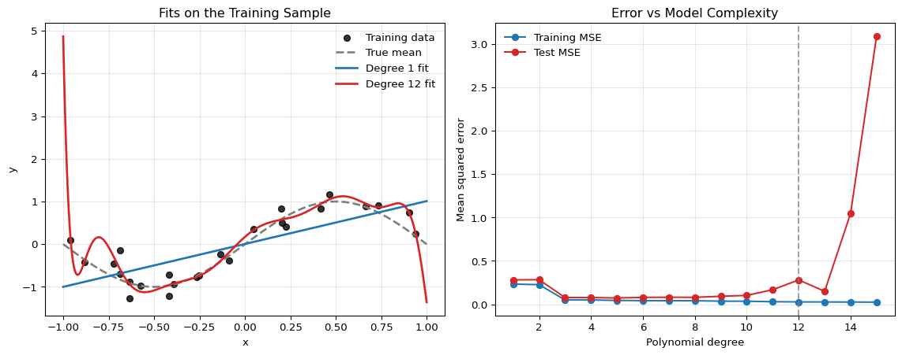
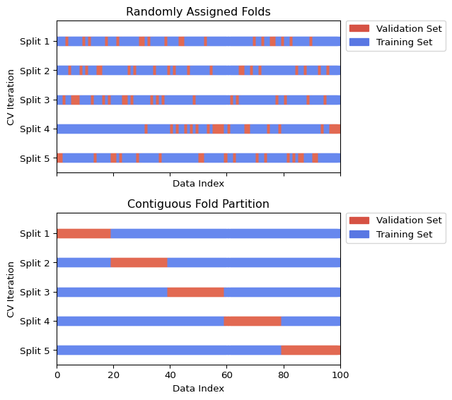
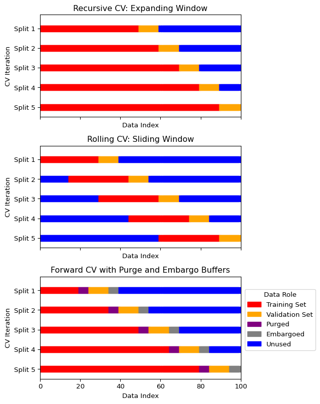
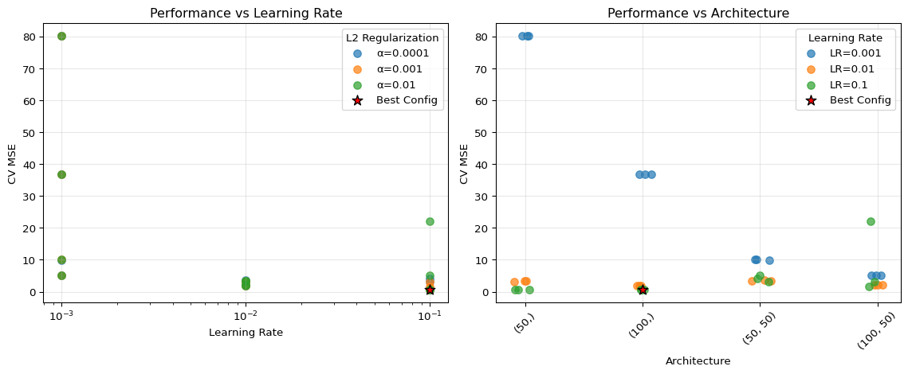

Under active development. A stable version is expected in November 2026. Feedback is welcome by email or via GitHub issues.
2 Cross Validation
2.1 How to Choose Hyperparameters and Architectures of Machine Learning Models?
When we build a machine learning model, we face several critical decisions that affect performance:
- Model Selection: Which algorithm should we use? (e.g., neural networks vs. random forests)
- Hyperparameter Tuning: What values should we choose for hyperparameters? (e.g., learning rate, regularization strength)
- Architecture Design: For neural networks, how many layers and neurons should we use?
Our primary goal is to create a model that performs well on new, unseen data. A model that only performs well on the data it was trained on is not useful in practice. This phenomenon, where a model learns the training data too well, including its noise and idiosyncrasies, is called overfitting.
For econometricians, this is not just a machine-learning issue. It arises whenever we choose among many specifications, tune regularization parameters, or compare forecasting models using the same dataset repeatedly.
2.2 A Simple Illustration of Overfitting
Consider a regression model with Gaussian errors:
\[ y_i = f(x_i) + \varepsilon_i, \qquad \varepsilon_i \sim \mathcal{N}(0,\sigma^2). \]
Suppose we approximate the conditional mean function by a polynomial of degree \(d\),
\[ \mu_d(x) = \beta_0 + \beta_1 x + \cdots + \beta_d x^d. \]
As discussed in the previous chapter, under Gaussian errors with fixed variance, maximizing the likelihood is equivalent to minimizing the training sum of squared errors. This makes the overfitting problem very transparent: if the degree \(d\) is too large, the model can improve in-sample fit by chasing noise in the training data.
The left panel shows the fitted mean functions. The high-degree polynomial is flexible enough to follow noise in the training sample, while the linear model is too rigid. The right panel shows the classic overfitting pattern: as model complexity rises, the training error falls monotonically, but the test error eventually rises again. Cross-validation is designed to detect exactly this problem before we commit to a model.
2.3 The Problem with Simple Train-Test Splits
A simple approach is to split our data into a training set and a testing set:
- Train different models/configurations on the training set
- Evaluate their performance on the testing set
- Choose the best-performing option
If this test set is used exactly once at the very end, it is a legitimate final evaluation device. The problem starts when we also use it to choose the model.
However, this simple approach has major drawbacks:
- High variance: Model performance can be highly dependent on which specific data points ended up in each set
- Test set contamination: If we use the test set to make multiple decisions (choose hyperparameters, select architecture), we’re effectively “training” on the test set, leading to overly optimistic performance estimates
- Limited data usage: We’re not using all available data for training
Cross-validation provides a more robust and reliable method for both performance estimation and model selection by systematically using different subsets of the data for training and validation.
Honest Workflow: Validation vs Test Set
The clean workflow is:
- Use the training data to fit candidate models.
- Use a validation strategy to compare models and tune hyperparameters.
- Keep the test set untouched until the very end for one final evaluation.
Cross-validation is primarily a replacement for a single validation split, not for the final test set.
2.4 Cross-Validation for Model Selection
Cross-validation serves two main purposes:
Important
Two Key Uses of Cross-Validation
- Performance Estimation: Get a robust estimate of how well a model will perform on unseen data
- Model Selection: Choose between different hyperparameters, architectures, or algorithms based on their cross-validated performance
For neural networks specifically, cross-validation helps us choose:
- Number of hidden layers (network depth)
- Number of neurons per layer (network width)
- Learning rate and batch size
- Regularization parameters (dropout rate, weight decay)
- Activation functions and optimization algorithms
Leakage Inside Cross-Validation
Cross-validation only works if each fold is treated like genuinely unseen data.
That means any operation that learns from the data must be carried out inside each training fold:
- scaling and standardization
- imputation of missing values
- feature selection or dimensionality reduction
- target transformations chosen from the data
If these steps are done on the full dataset before cross-validation, the validation folds leak information into training and the reported performance is too optimistic.
Question for Reflection
In the leakage examples listed above, which preprocessing steps must be re-estimated inside each training fold rather than once on the full sample, and why?
Suggested Answer
Any step that learns quantities from the data must be estimated using only the training part of the fold. Examples from the chapter include scaling and standardization, imputation of missing values, feature selection or dimensionality reduction, target transformations chosen from the data, and hyperparameter choices. Pure deterministic transformations fixed before looking at the sample can be applied outside the fold, but anything using information from the validation fold creates leakage.
2.5 K-Fold Cross-Validation
The most common type of cross-validation is K-Fold Cross-Validation. The procedure is as follows:
- Shuffle the dataset randomly.
- Split the dataset into \(K\) equal-sized groups (or “folds”).
- For each fold:
- Use the fold as a validation set.
- Use the remaining \(K-1\) folds as a training set.
- Train the model on the training set and evaluate it on the validation set.
- Average the performance scores from the \(K\) folds to get a single, more robust performance estimate.
Common Choices for K
A common choice for \(K\) is 5 or 10. A higher \(K\) means less bias but can be computationally expensive. A lower \(K\) is faster but may have higher variance in its performance estimate.
Visualizing K-Fold Cross-Validation
The following figure illustrates the K-Fold process for \(K=5\). In each iteration, a different fold is used for validation (orange) while the rest are used for training (blue).

Additional Information: Stratified K-Fold for Classification
When dealing with classification problems, especially with imbalanced classes, it’s typically important to use Stratified K-Fold. This variant ensures that each fold has the same percentage of samples for each class as the original dataset.
2.6 Time Series Cross-Validation
Standard K-Fold cross-validation is not suitable for time series data because it assumes that the data points are independent and identically distributed (i.i.d.). In time series, there is a temporal dependency; the order of the data matters. Randomly shuffling and splitting time series data would lead to data leakage, where the model is trained on data from the future to predict the past, leading to an overly optimistic performance estimate.
Specialized cross-validation techniques are needed for time series data.
Econometric Warning
In forecasting applications, leakage can arise even without explicit shuffling. Examples include:
- predictors that are revised ex post
- features published with delay
- overlapping forecast targets
- preprocessing performed using information from the full sample
So “time-aware” cross-validation must reflect the actual information set available at the forecast origin.
Expanding Window (or Rolling-Origin)
In this approach, the training set grows with each split, and the validation set is always a block of data that comes after the training data.
- Start with a small training set.
- The next block of data is the validation set.
- In the next iteration, the previous validation set is added to the training set, and the subsequent block becomes the new validation set.
This mimics a real-world scenario where a model is periodically retrained as new data becomes available.
Sliding Window
This method uses a fixed-size training set that “slides” through time.
- Select a block of data for training.
- The next block of data is the validation set.
- In the next iteration, both the training and validation windows slide forward by a specified step.
This is useful when you believe that only the most recent data is relevant for prediction.
Visualizing Time Series Cross-Validation
The figure below illustrates the expanding and sliding window approaches.

Scikit-learn’s TimeSeriesSplit implements the expanding window approach. A sliding window needs some self-coding.
2.7 Practical Example: Tuning a Neural Network with Cross-Validation
Let’s see how to use cross-validation to select the best hyperparameters for a simple neural network; see Section 5. We will tune the number of hidden units and the learning rate using scikit-learn.
To keep the example honest, we put standardization and model fitting into a single Pipeline. This ensures that scaling is learned separately inside each training fold rather than on the full dataset.
Show the code
import numpy as np
import matplotlib.pyplot as plt
from sklearn.neural_network import MLPRegressor
from sklearn.model_selection import cross_val_score, ParameterGrid
from sklearn.datasets import make_regression
from sklearn.preprocessing import StandardScaler
from sklearn.pipeline import Pipeline
import pandas as pd
import warnings
# Set random seeds for reproducibility
np.random.seed(42)
# Suppress convergence warnings
warnings.filterwarnings("ignore", category=UserWarning, module="sklearn")
warnings.filterwarnings("ignore", message="lbfgs failed to converge*")
# Generate synthetic dataset
X, y = make_regression(n_samples=1000, n_features=10, noise=0.1, random_state=42)
# Define hyperparameter grid
param_grid = {
'hidden_layer_sizes': [(50,), (100,), (50, 50), (100, 50)],
'learning_rate_init': [0.001, 0.01, 0.1],
'alpha': [0.0001, 0.001, 0.01] # L2 regularization
}
# Create pipeline with scaling
pipeline = Pipeline([
('scaler', StandardScaler()),
('mlp', MLPRegressor(max_iter=1000, random_state=42))
])
# Perform grid search with cross-validation
results = []
for params in ParameterGrid(param_grid):
# Update pipeline parameters
pipeline_params = {f'mlp__{key}': value for key, value in params.items()}
pipeline.set_params(**pipeline_params)
# Perform 5-fold cross-validation
cv_scores = cross_val_score(pipeline, X, y, cv=5, scoring='neg_mean_squared_error')
results.append({
'hidden_layers': str(params['hidden_layer_sizes']),
'learning_rate': params['learning_rate_init'],
'alpha': params['alpha'],
'mean_cv_mse': -cv_scores.mean(),
'std_cv_mse': cv_scores.std()
})
# Convert to DataFrame for easier analysis
results_df = pd.DataFrame(results)
# Find best configuration
best_idx = results_df['mean_cv_mse'].idxmin()
best_config = results_df.iloc[best_idx]
print("Best Configuration:")
print(f"Hidden Layers: {best_config['hidden_layers']}")
print(f"Learning Rate: {best_config['learning_rate']}")
print(f"Alpha (L2 reg): {best_config['alpha']}")
print(f"CV MSE: {best_config['mean_cv_mse']:.4f} ± {best_config['std_cv_mse']:.4f}")
# Visualize results
fig, (ax1, ax2) = plt.subplots(1, 2, figsize=(12, 5))
# Plot 1: Learning rate vs performance (all configurations)
for alpha_val in results_df['alpha'].unique():
subset = results_df[results_df['alpha'] == alpha_val]
ax1.scatter(subset['learning_rate'], subset['mean_cv_mse'],
label=f'α={alpha_val}', alpha=0.7, s=50)
ax1.set_xlabel('Learning Rate')
ax1.set_ylabel('CV MSE')
ax1.set_title('Performance vs Learning Rate')
ax1.set_xscale('log')
ax1.grid(True, alpha=0.3)
ax1.legend(title='L2 Regularization')
# Plot 2: Architecture vs performance (all configurations)
# Create a mapping for architectures to x-positions
arch_names = results_df['hidden_layers'].unique()
arch_mapping = {arch: i for i, arch in enumerate(arch_names)}
results_df['arch_pos'] = results_df['hidden_layers'].map(arch_mapping)
# Add small random jitter to x-position for better visibility
np.random.seed(42)
jitter = np.random.normal(0, 0.05, len(results_df))
for lr_val in results_df['learning_rate'].unique():
subset = results_df[results_df['learning_rate'] == lr_val]
ax2.scatter(subset['arch_pos'] + jitter[subset.index], subset['mean_cv_mse'],
label=f'LR={lr_val}', alpha=0.7, s=50)
ax2.set_xlabel('Architecture')
ax2.set_ylabel('CV MSE')
ax2.set_title('Performance vs Architecture')
ax2.set_xticks(range(len(arch_names)))
ax2.set_xticklabels(arch_names, rotation=45)
ax2.grid(True, alpha=0.3)
ax2.legend(title='Learning Rate')
# Highlight best configuration
best_lr = best_config['learning_rate']
best_arch_pos = arch_mapping[best_config['hidden_layers']]
best_score = best_config['mean_cv_mse']
ax1.scatter([best_lr], [best_score], color='red', s=100, marker='*',
edgecolors='black', linewidth=1, label='Best Config', zorder=5)
ax2.scatter([best_arch_pos], [best_score], color='red', s=100, marker='*',
edgecolors='black', linewidth=1, label='Best Config', zorder=5)
# Update legends to include best config
ax1.legend(title='L2 Regularization')
ax2.legend(title='Learning Rate')
plt.tight_layout()
plt.show()
# Show top 5 configurations
print("\nTop 5 Configurations:")
print(results_df.nsmallest(5, 'mean_cv_mse')[['hidden_layers', 'learning_rate', 'alpha', 'mean_cv_mse', 'std_cv_mse']])Best Configuration:
Hidden Layers: (100,)
Learning Rate: 0.1
Alpha (L2 reg): 0.01
CV MSE: 0.5821 ± 0.1241
Top 5 Configurations:
hidden_layers learning_rate alpha mean_cv_mse std_cv_mse
29 (100,) 0.1 0.0100 0.582092 0.124075
5 (100,) 0.1 0.0001 0.584441 0.114173
17 (100,) 0.1 0.0010 0.585387 0.113802
2 (50,) 0.1 0.0001 0.621666 0.113096
26 (50,) 0.1 0.0100 0.623375 0.122134
Key Insights from the Example
- Systematic Search: We test multiple combinations of hyperparameters systematically rather than guessing
- Robust Evaluation: Each configuration is evaluated using 5-fold cross-validation, giving us both mean performance and uncertainty estimates
- Leakage Prevention: The
Pipelineensures that standardization is re-estimated inside each fold - Fair Comparison: All models are evaluated on the same data splits, ensuring fair comparison
For Larger Networks
For deep neural networks with many hyperparameters, consider:
- Random Search: Sample hyperparameters randomly instead of exhaustive grid search
- Bayesian Optimization: Use libraries like
optunaorhyperoptfor more efficient search - Early Stopping: Monitor validation performance during training to avoid overfitting
- Nested Cross-Validation: Use an outer loop for final performance assessment if hyperparameter search itself is extensive
2.8 Summary
Key Takeaways
- Cross-validation is a validation device for model selection and tuning; it is not a substitute for a final untouched test set.
- A validation strategy is honest only if every data-dependent preprocessing step is recomputed inside each training fold.
- Repeatedly choosing the best specification from noisy validation scores creates selection-induced optimism, even when each candidate score is unbiased on its own.
- In time-series settings, cross-validation must respect the forecast-origin information set and the publication timing of predictors.
- Random K-fold is often inappropriate for dependent data because it can leak future information into the training sample.
Common Pitfalls
- Using the test set repeatedly while tuning hyperparameters or architectures.
- Standardizing, imputing, or selecting predictors on the full sample before cross-validation.
- Treating random K-fold as automatically valid for time-series forecasting problems.
- Forgetting that revised or delayed-release predictors may not belong to the real-time information set.
2.9 Exercises
Exercise 2.1: Leakage from Full-Sample Standardization
Consider leave-one-out cross-validation for a scalar predictor \(x_1,\dots,x_T\). Let observation \(j\) be the validation observation. Define
\[ \bar{x}=\frac{1}{T}\sum_{t=1}^{T}x_t \qquad\text{and}\qquad \bar{x}_{-j}=\frac{1}{T-1}\sum_{t\neq j}x_t, \]
where \(\bar{x}\) is the full-sample mean and \(\bar{x}_{-j}\) is the mean computed only on the training fold.
Define the corresponding second moments
\[ s^2=\frac{1}{T}\sum_{t=1}^{T}(x_t-\bar{x})^2, \qquad s_{-j}^2=\frac{1}{T-1}\sum_{t\neq j}(x_t-\bar{x}_{-j})^2. \]
- Show that \[ \bar{x}=\bar{x}_{-j}+\frac{x_j-\bar{x}_{-j}}{T}. \]
- Show that \[ s^2=\frac{T-1}{T}s_{-j}^2+\frac{T-1}{T^2}(x_j-\bar{x}_{-j})^2. \]
- Let \[ z_j^{\text{full}}=\frac{x_j-\bar{x}}{s}, \qquad z_j^{\text{honest}}=\frac{x_j-\bar{x}_{-j}}{s_{-j}}, \qquad \Delta_j=\frac{x_j-\bar{x}_{-j}}{s_{-j}}. \] Show that \[ z_j^{\text{full}} = \frac{\sqrt{T-1}\,\Delta_j}{\sqrt{T+\Delta_j^2}}. \]
- Deduce that \[ |z_j^{\text{full}}|<|z_j^{\text{honest}}| \qquad\text{for every }\Delta_j\neq 0. \] Explain why this shows that full-sample standardization mechanically uses the validation observation to shrink its own standardized magnitude.
Exam level. The point is to show mathematically that preprocessing on the full sample contaminates the validation fold and changes the object being evaluated.
Hint for Part 1
Write
\[ \sum_{t=1}^{T}x_t = \sum_{t\neq j}x_t + x_j \]
and replace the sums by \((T-1)\bar{x}_{-j}\) and \(T\bar{x}\).
Hint for Part 2
Use the identity
\[ \sum_{t=1}^{T}(x_t-\bar{x})^2 = \sum_{t\neq j}(x_t-\bar{x})^2+(x_j-\bar{x})^2 \]
and rewrite \(x_t-\bar{x}\) as \((x_t-\bar{x}_{-j})-(\bar{x}-\bar{x}_{-j})\).
Hint for Part 3
Use Parts 1 and 2 to write both numerator and denominator in terms of \(\Delta_j\) and \(T\).
Hint for Part 4
Compare the multiplicative factor linking \(z_j^{\text{full}}\) and \(\Delta_j\) with 1.
Solution
Part 1: Mean Leakage from Full-Sample Standardization
We have
\[ T\bar{x}=\sum_{t=1}^{T}x_t=\sum_{t\neq j}x_t+x_j=(T-1)\bar{x}_{-j}+x_j. \]
Dividing by \(T\) gives
\[ \bar{x}=\frac{T-1}{T}\bar{x}_{-j}+\frac{x_j}{T} =\bar{x}_{-j}+\frac{x_j-\bar{x}_{-j}}{T}. \]
Part 2: Variance Leakage from Full-Sample Standardization
We start from
\[ \sum_{t=1}^{T}(x_t-\bar{x})^2 = \sum_{t\neq j}(x_t-\bar{x})^2+(x_j-\bar{x})^2. \]
For \(t\neq j\),
\[ x_t-\bar{x} =(x_t-\bar{x}_{-j})-(\bar{x}-\bar{x}_{-j}). \]
Since \(\sum_{t\neq j}(x_t-\bar{x}_{-j})=0\), we obtain
\[ \sum_{t\neq j}(x_t-\bar{x})^2 = \sum_{t\neq j}(x_t-\bar{x}_{-j})^2 +(T-1)(\bar{x}-\bar{x}_{-j})^2. \]
By Part 1,
\[ \bar{x}-\bar{x}_{-j}=\frac{x_j-\bar{x}_{-j}}{T}, \qquad x_j-\bar{x}=\frac{T-1}{T}(x_j-\bar{x}_{-j}). \]
Therefore
\[ \sum_{t=1}^{T}(x_t-\bar{x})^2 =(T-1)s_{-j}^2+(T-1)\frac{(x_j-\bar{x}_{-j})^2}{T^2} +\frac{(T-1)^2}{T^2}(x_j-\bar{x}_{-j})^2. \]
Combining the last two terms gives
\[ \sum_{t=1}^{T}(x_t-\bar{x})^2 =(T-1)s_{-j}^2+\frac{T-1}{T}(x_j-\bar{x}_{-j})^2. \]
Dividing by \(T\) yields
\[ s^2=\frac{T-1}{T}s_{-j}^2+\frac{T-1}{T^2}(x_j-\bar{x}_{-j})^2. \]
Part 3: Closed-Form Expression for the Contaminated Z-Score
From Part 1,
\[ x_j-\bar{x}=\frac{T-1}{T}(x_j-\bar{x}_{-j}) =\frac{T-1}{T}\Delta_j s_{-j}. \]
From Part 2,
\[ s^2=\frac{T-1}{T}s_{-j}^2+\frac{T-1}{T^2}\Delta_j^2 s_{-j}^2 =\frac{T-1}{T}s_{-j}^2\left(1+\frac{\Delta_j^2}{T}\right). \]
Hence
\[ s=s_{-j}\sqrt{\frac{T-1}{T}}\sqrt{1+\frac{\Delta_j^2}{T}}. \]
Therefore
\[ z_j^{\text{full}} =\frac{x_j-\bar{x}}{s} = \frac{\frac{T-1}{T}\Delta_j s_{-j}} {s_{-j}\sqrt{\frac{T-1}{T}}\sqrt{1+\frac{\Delta_j^2}{T}}} = \frac{\sqrt{T-1}\,\Delta_j}{\sqrt{T+\Delta_j^2}}. \]
Part 4: Why the Validation Observation Shrinks Itself
We have
\[ z_j^{\text{honest}}=\Delta_j. \]
So
\[ \left|\frac{z_j^{\text{full}}}{z_j^{\text{honest}}}\right| = \frac{\sqrt{T-1}}{\sqrt{T+\Delta_j^2}} <1 \qquad\text{for every }\Delta_j\neq 0, \]
because \(T+\Delta_j^2>T-1\).
Thus
\[ |z_j^{\text{full}}|<|z_j^{\text{honest}}| \qquad\text{whenever }\Delta_j\neq 0. \]
This shows mathematically that full-sample standardization is not innocuous: the validation observation enters both the centering and scaling rule, which shrinks its own standardized magnitude. So the validation fold is no longer being evaluated under a preprocessing rule estimated only from the training data.
Exercise 2.2: Why Model Search Creates Optimistic Validation Scores
Suppose two candidate forecasting models, \(A\) and \(B\), have the same true out-of-sample risk \(R\). Their validation-set risk estimates satisfy
\[ \hat{R}_A = R+\varepsilon_A, \qquad \hat{R}_B = R+\varepsilon_B, \]
where \(\varepsilon_A\) and \(\varepsilon_B\) are independent with mean zero.
The researcher selects the model with the smaller validation estimate.
- Show that \[ \min(\hat{R}_A,\hat{R}_B) = R+\frac{\varepsilon_A+\varepsilon_B-|\varepsilon_A-\varepsilon_B|}{2}. \]
- Deduce that \[ \mathbb{E}\big[\min(\hat{R}_A,\hat{R}_B)\big] = R-\frac{1}{2}\mathbb{E}\big[|\varepsilon_A-\varepsilon_B|\big] < R. \]
- Suppose in addition that \[ \varepsilon_A,\varepsilon_B \stackrel{\text{iid}}{\sim} \mathcal{N}(0,\sigma^2). \] Derive the exact expectation of the selected validation score and show that \[ \mathbb{E}\big[\min(\hat{R}_A,\hat{R}_B)\big] = R-\frac{\sigma}{\sqrt{\pi}}. \]
- Explain why the selected validation score is optimistically biased even though both \(\hat{R}_A\) and \(\hat{R}_B\) are individually unbiased estimates of \(R\). Relate this result to repeated specification search in econometrics and explain why an untouched test set or nested cross-validation is needed after model selection.
Exam level. The exercise formalizes a central point of the chapter: validation is noisy, and searching across specifications makes the best observed score look too good.
Hint for Part 1
Use the identity
\[ \min(a,b)=\frac{a+b-|a-b|}{2}. \]
Hint for Part 2
Take expectations and use \(\mathbb{E}[\varepsilon_A]=\mathbb{E}[\varepsilon_B]=0\).
Hint for Part 3
Under the Gaussian assumption, \(\varepsilon_A-\varepsilon_B\) is also Gaussian. Use the fact that if \(Z\sim\mathcal{N}(0,\tau^2)\), then
\[ \mathbb{E}|Z|=\tau\sqrt{\frac{2}{\pi}}. \]
Hint for Part 4
Unbiasedness holds model by model. The bias appears after taking the minimum across noisy estimates.
Solution
Part 1: Writing the Selected Validation Score
Apply the identity with \(a=\hat{R}_A\) and \(b=\hat{R}_B\):
\[ \min(\hat{R}_A,\hat{R}_B) =\frac{\hat{R}_A+\hat{R}_B-|\hat{R}_A-\hat{R}_B|}{2}. \]
Substituting \(\hat{R}_A=R+\varepsilon_A\) and \(\hat{R}_B=R+\varepsilon_B\) gives
\[ \min(\hat{R}_A,\hat{R}_B) =\frac{2R+\varepsilon_A+\varepsilon_B-|\varepsilon_A-\varepsilon_B|}{2} =R+\frac{\varepsilon_A+\varepsilon_B-|\varepsilon_A-\varepsilon_B|}{2}. \]
Part 2: Showing the Optimism Bias
Taking expectations,
\[ \mathbb{E}\big[\min(\hat{R}_A,\hat{R}_B)\big] = R+\frac{\mathbb{E}[\varepsilon_A]+\mathbb{E}[\varepsilon_B]-\mathbb{E}[|\varepsilon_A-\varepsilon_B|]}{2}. \]
Since both errors have mean zero,
\[ \mathbb{E}\big[\min(\hat{R}_A,\hat{R}_B)\big] = R-\frac{1}{2}\mathbb{E}[|\varepsilon_A-\varepsilon_B|]. \]
Because \(|\varepsilon_A-\varepsilon_B|\ge 0\) and is strictly positive with positive probability unless the two errors are always identical,
\[ \mathbb{E}\big[\min(\hat{R}_A,\hat{R}_B)\big] < R. \]
Part 3: Exact Gaussian Optimism
Under the additional assumption,
\[ \varepsilon_A-\varepsilon_B\sim \mathcal{N}(0,2\sigma^2). \]
If \(Z\sim\mathcal{N}(0,\tau^2)\), then
\[ \mathbb{E}|Z|=\tau\sqrt{\frac{2}{\pi}}. \]
Here \(\tau=\sqrt{2}\sigma\), so
\[ \mathbb{E}\big[|\varepsilon_A-\varepsilon_B|\big] =\sqrt{2}\sigma\sqrt{\frac{2}{\pi}} =\frac{2\sigma}{\sqrt{\pi}}. \]
Substituting this into Part 2 gives
\[ \mathbb{E}\big[\min(\hat{R}_A,\hat{R}_B)\big] = R-\frac{1}{2}\cdot \frac{2\sigma}{\sqrt{\pi}} = R-\frac{\sigma}{\sqrt{\pi}}. \]
Part 4: Why Specification Search Creates Bias
Each candidate validation score is unbiased when viewed separately:
\[ \mathbb{E}[\hat{R}_A]=\mathbb{E}[\hat{R}_B]=R. \]
But the researcher does not report one fixed model’s score; they report the smaller of two noisy scores. The minimum operator systematically picks negative noise realizations. That is why the selected validation score is optimistically biased.
The same logic applies when an econometrician searches across many lag lengths, control sets, regularization parameters, or model classes using the same validation sample. The “best” validation score partly reflects good luck.
An untouched test set or nested cross-validation is needed because model selection has already used the validation information. A final honest assessment requires a fresh evaluation sample that was not involved in the search.
Exercise 2.3: Feasible and Infeasible Time-Series Forecasts
Suppose the data-generating process is
\[ y_{t+1}=\beta z_t+u_{t+1}, \qquad z_t=\rho z_{t-1}+\xi_t, \]
where \(|\rho|<1\), \(\mathbb{E}[u_{t+1}]=\mathbb{E}[\xi_t]=0\), \(\operatorname{Var}(u_{t+1})=\sigma_u^2\), \(\operatorname{Var}(\xi_t)=\sigma_\xi^2\), and \(u_{t+1}\) is independent of \(\xi_t\) and of the past.
Assume the predictor \(z_t\) is published with a one-period delay, so at forecast origin \(t\) we observe \(z_{t-1}\) but not \(z_t\). Let \(\mathcal{F}_t=\sigma(z_{t-1},z_{t-2},\dots)\).
Consider the two forecasting rules
\[ \hat{y}^{\,\text{oracle}}_{t+1\mid t}=\beta z_t, \qquad \hat{y}^{\,\text{rt}}_{t+1\mid t}=\mathbb{E}[y_{t+1}\mid \mathcal{F}_t]. \]
- Derive the feasible real-time forecast \(\hat{y}^{\,\text{rt}}_{t+1\mid t}\) as a function of \(z_{t-1}\).
- Compute the one-step-ahead forecast error of the feasible real-time forecast and show that its MSPE is \[ \operatorname{MSPE}_{\text{rt}}=\beta^2\sigma_\xi^2+\sigma_u^2. \]
- Compute the forecast error of the infeasible oracle forecast \(\hat{y}^{\,\text{oracle}}_{t+1\mid t}\) and show that \[ \operatorname{MSPE}_{\text{oracle}}=\sigma_u^2. \]
- Explain why a random cross-validation design that effectively allows the use of \(z_t\) when forecasting \(y_{t+1}\) will deliver an unduly optimistic estimate of real-time forecasting performance.
Exam level. The exercise formalizes the central econometric issue in time-series cross-validation: the validation design must match the real-time information set.
Hint for Part 1
Use iterated expectations:
\[ \mathbb{E}[y_{t+1}\mid \mathcal{F}_t] = \beta\,\mathbb{E}[z_t\mid \mathcal{F}_t]. \]
Hint for Part 2
Substitute the AR(1) representation of \(z_t\) into the forecast error.
Hint for Part 3
The oracle forecast uses the contemporaneous but unavailable predictor \(z_t\) directly.
Hint for Part 4
Compare the two MSPE formulas. Ask which one is relevant for the deployment problem faced by the econometrician.
Solution
Part 1: Deriving the Feasible Real-Time Forecast
We have
\[ \mathbb{E}[y_{t+1}\mid \mathcal{F}_t] = \beta\,\mathbb{E}[z_t\mid \mathcal{F}_t] = \beta\,\mathbb{E}[\rho z_{t-1}+\xi_t\mid \mathcal{F}_t]. \]
Since \(z_{t-1}\in \mathcal{F}_t\) and \(\mathbb{E}[\xi_t\mid \mathcal{F}_t]=0\),
\[ \hat{y}^{\,\text{rt}}_{t+1\mid t} = \beta\rho z_{t-1}. \]
Part 2: Real-Time Forecast Error and MSPE
The real-time forecast error is
\[ e^{\text{rt}}_{t+1} = y_{t+1}-\hat{y}^{\,\text{rt}}_{t+1\mid t} = \beta z_t+u_{t+1}-\beta\rho z_{t-1}. \]
Using \(z_t=\rho z_{t-1}+\xi_t\), this becomes
\[ e^{\text{rt}}_{t+1} = \beta\xi_t+u_{t+1}. \]
Hence
\[ \operatorname{MSPE}_{\text{rt}} = \operatorname{Var}(\beta\xi_t+u_{t+1}) = \beta^2\sigma_\xi^2+\sigma_u^2, \]
using independence of \(\xi_t\) and \(u_{t+1}\).
Part 3: Oracle Forecast Error and MSPE
The oracle forecast error is
\[ e^{\text{oracle}}_{t+1} = y_{t+1}-\hat{y}^{\,\text{oracle}}_{t+1\mid t} = \beta z_t+u_{t+1}-\beta z_t = u_{t+1}. \]
Therefore
\[ \operatorname{MSPE}_{\text{oracle}}=\operatorname{Var}(u_{t+1})=\sigma_u^2. \]
Part 4: Why Random CV Becomes Infeasible
The oracle forecast is better on paper because it uses information that is unavailable in real time:
\[ \operatorname{MSPE}_{\text{oracle}}=\sigma_u^2 < \beta^2\sigma_\xi^2+\sigma_u^2 = \operatorname{MSPE}_{\text{rt}} \]
whenever \(\beta\neq 0\) and \(\sigma_\xi^2>0\).
So a random cross-validation design that effectively lets the model exploit \(z_t\) when predicting \(y_{t+1}\) is evaluating an infeasible forecasting problem. It will produce an overly optimistic estimate of achievable real-time performance. The relevant validation design is the one that reproduces the actual forecast-origin information set, not the one with the lower but infeasible error.